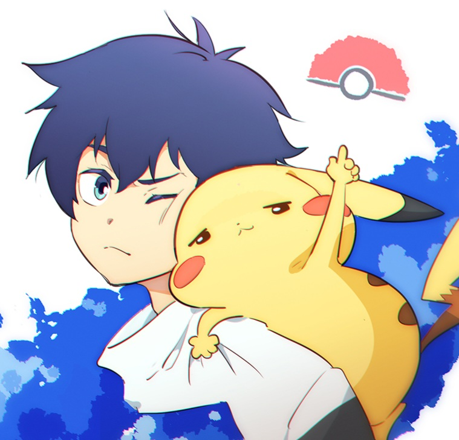

My name is Tianyi and I'm a huge Pokemon fan! I've shared my favorite Pokemons and game soundtracks. Have fun!

Pokemon Game
My first Pokemon game is Pokemon FireRed. I was about 9 years old and I played the game on the GameBoy that I borrowed from my cousin. The game was so impressive to a kid that I totally got immersed. After that, I nearly played the Pokemon game of each generation. Now it's time for Scarlet&Violet.
Pokemon Anime
I've watched Pokemon anime since I was in primary school. I nearly watched every episode (yes, more than 1000 episodes). It's just like I was taking the adventure with Ash. I was really happy to see Ash become the champion last year, but also felt disappointed that he would not be the main character in Pokemon Anime any more. Ash's pursing of becoming Pokemon Master sometimes encourages me to work harder in real life.